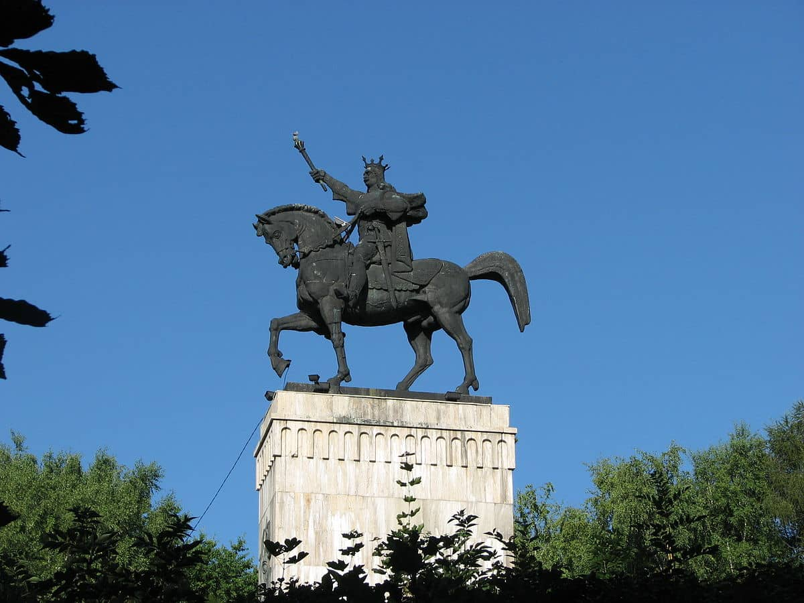

Introducere
Orașul Suceava este reședință județului cu același nume. Acesta este unul dintre cele mai frumoase orașe din regiunea istorică Bucovina, o localitatea plină de obiective turistice ce impresionează atât prin istoria, cât și prin frumusețea lor.

Istoria și geografia
Suceava se numără printre cele mai cunoscute așezări urbane ale regiunii Moldovei. Capitală a fostului principat timp de doua secole, între anii 1774 – 1918, Suceava este un oraș cu o istorie bogată și un semnificativ potențial turistic.
Suceava este unul dintre cele mai vechi orașe din nord-estul țării, urme ale locuirii sale descoperindu-se încă din perioada paleoliticului. Documentele istorice spun că, în secolele II – III, pe acest teritoriu exista o așezare a dacilor liberi, dar importanța locului a fost atestată și în Evul Mediu, când aici a fost ridicată Cetatea de Scaun a Sucevei.

Galerie
Suceava are un farmec aparte, beneficiind de un potențial turistic diversificat, ce constă în numeroase monumente, muzee, case memoriale și vechi cetăți, ce amintesc de gloria unor vremuri apuse.